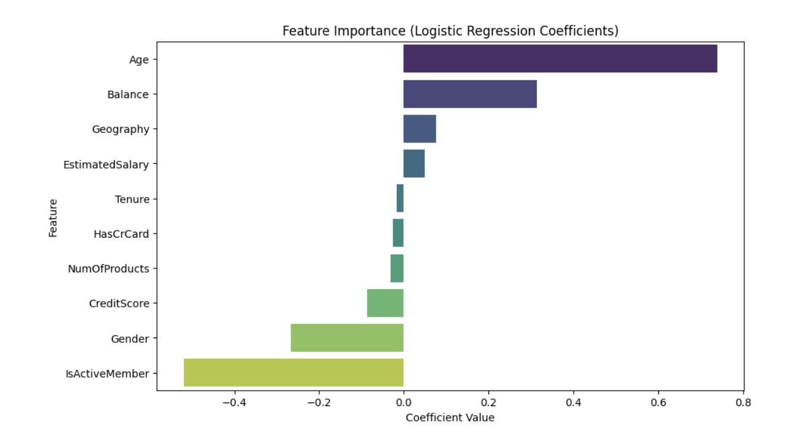

🏦 Predicting Bank Customer Churn
📌 Project Overview
As digital banking continues to grow, identifying and preventing customer churn—especially silent attrition—has become critical for banks. This project applied multiple machine learning models to predict customer churn and uncover key behavioral and demographic risk factors to enable proactive retention strategies.
🎯 Objectives
- Visualize current customer behavior and demographics
- Build predictive models to classify customers at risk of churn
- Identify actionable drivers of attrition for strategic intervention
🗂️ Data & Methods
- Data: 10,000 records from a European bank (Kaggle)
- Features: Age, Gender, Geography, Balance, Tenure, Products, Activity, etc.
- Tools: Python, Scikit-learn, SMOTE, PCA
- Models Used: Logistic Regression, Gaussian Naive Bayes, Decision Tree, Random Forest
🤖 Model Performance Summary
| Model | Accuracy | Precision (Churn) | Recall (Churn) | F1-Score (Churn) |
|---|---|---|---|---|
| Logistic Regression | 80.9% | 60% | 19% → 77% (with SMOTE) | 29% → 77% |
| Naive Bayes | 78.7% | 36% → 70% | 6% → 74% | 11% → 72% |
| Decision Tree | 85% (after pruning) | 80% | 37% | 51% |
| Random Forest | 86% → 84% (with SMOTE) | 76% → 58% | 47% → 64% | 58% → 61% |
✅ Random Forest with SMOTE achieved the best balance for identifying churners, despite a slight drop in precision.
🔍 Feature Importance – Logistic Regression

This chart displays the standardized coefficients from the Logistic Regression model, highlighting which features most influence customer churn predictions.
- Age and Balance are the strongest positive predictors of churn — older customers and those with higher balances are more likely to leave.
- IsActiveMember has the strongest negative coefficient, indicating active users are significantly less likely to churn.
- Other features like Geography, Estimated Salary, and Gender show smaller but still notable impacts.
These insights help the bank prioritize retention efforts around customer age, engagement, and account value.
🔍 Key Insights
- Demographics: Older customers are more likely to churn; geographic differences (France/Germany higher than Spain).
- Behavioral Indicators:
- Inactive members have a 27% churn rate vs. 14% for active.
- Customers with fewer products are more likely to churn.
- Top Predictive Features: Age, Number of Products, Balance, IsActiveMember.
💡 Strategic Recommendations
- Engagement: Target inactive users and those with only 1–2 products via cross-sell campaigns.
- Personalization: Design region-specific and age-aware outreach strategies.
- Retention: Monitor older customers and offer digital support to reduce disengagement.
- Model Use: Deploy Random Forest with SMOTE to support real-time churn alerts.
🧾 Conclusion
This project shows how machine learning can effectively identify churn risk using behavioral and demographic signals. With Random Forest as the most effective model, supported by SMOTE balancing, banks can proactively reduce attrition by targeting the right customers at the right time. The insights gained can guide smarter customer engagement and long-term profitability.